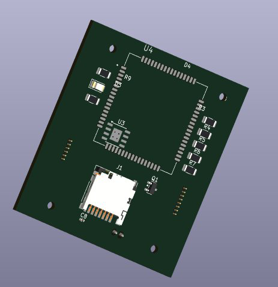
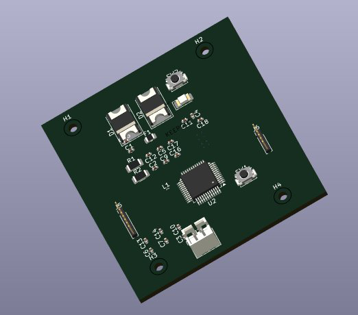

U4 — Tracking & Logging Board
STM32 GPS Tracker Board
KiCad · STM32 · GPS Module
KiCadSTM32GPSSD Card LoggingDRC/ERC Verified


Overview
A multi-layer tracking board that brings together an STM32 microcontroller, a GPS module, and an SD card slot for onboard data logging. With three components that all need clean signal integrity — the MCU's digital lines, the GPS module's RF front end, and the SD card's data bus — the layout leans on a dedicated ground plane and careful power management to keep each section quiet.
The GPS module sits inside its own antenna keep-out zone, kept clear of copper pour and crossing traces so reception isn't compromised by the rest of the board.
Key Features
- STM32 microcontroller integration
- GPS module with dedicated antenna keep-out zone
- SD card slot for onboard data logging
- UART communication interface
- Dedicated power management circuitry
- Multi-layer routing with a solid ground plane
- Mounting holes for enclosure integration
- DRC and ERC verified before fabrication
Build Spec
ToolKiCad
MCUSTM32
PositioningGPS module
StoragemicroSD slot
CommsUART
LayersMulti-layer + ground plane
MechanicalEnclosure mounting holes
VerificationDRC + ERC clean